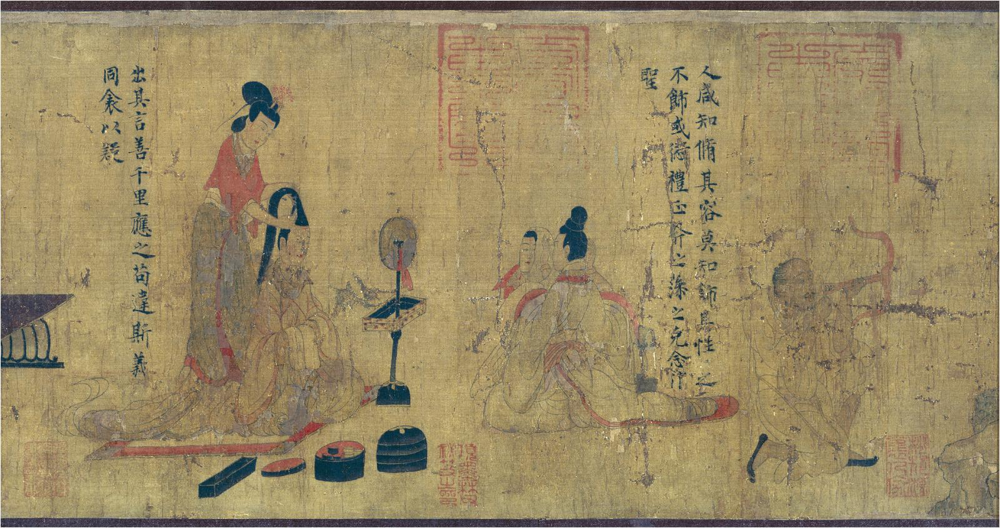

第 29 章
纸的时代
一纸公文自建康城南秦淮水畔的宅邸中传出，记录着谢峻理书之事。他并非在读书，而是在整理书籍——这两件事的区别，任何一个拥有超过三百卷藏书的士人都能立刻分辨出来。读书是手握一卷，或坐或卧，目光循着墨字一行行走下去；理书是把那些堆叠的、散落的、借出未还的、新抄未校的卷轴一一登记、分类、补缀、归架。谢峻从辰时开始做这件事，现在已经过了午时，他只完成了不到三成。
问题不在于数量。三百二十七卷，比起他父亲那一辈的藏书家来说不算什么——他父亲生前只有四十一卷书，其中三十七卷是手抄本，四卷是别人赠送的抄本，没有一卷是买来的。不是因为买不到，是因为买不起。
一卷帛书在会稽要价三千钱，相当于十亩中等水田一年的收成。他父亲做了一辈子郡丞，俸禄大半花在了书上，到死也只攒下那四十一卷。
谢峻现在有三百二十七卷，全部是纸本。他拿起最上面的一卷，展开检查。纸面微微泛黄，但字迹清晰如新。这是二十年前他在荆州做别驾时，从一个北来的流民手里买下的《左传》杜预注残本。
那流民背着一个竹筐，筐里塞了十七个纸卷，要价总共不过八百钱。八百钱买十七卷书——他父亲要是听到这个价钱，大概会以为是梦话。谢峻把纸卷凑近鼻端，闻了闻。没有蠹鱼的腥气，没有竹简的霉味，只有纸张本身那种干燥、微涩的气息，混着墨香。他用手指轻轻摩挲纸面，触感平滑，不像竹简那样硌手，也不像缣帛那样滑腻。这种纸产自荆州的造纸坊，用的是麻和楮皮，抄工不算精细，纸面上还能看到帘纹的痕迹，但足够写字，足够保存，足够传抄。
足够传抄——这四个字才是关键。谢峻把《左传》残本放回架上，又抽出另一卷。这一卷是《汉书·艺文志》，纸色更白，质地更韧，是他去年托人从蜀中买来的。蜀纸在南方士人圈子里已经有了口碑，据说那里的造纸匠人学了中原的技法，又改用本地的竹纤维，造出来的纸比麻纸更薄、更匀。
谢峻不在乎这些工艺上的讲究，他在乎的是另外一件事：这一卷《艺文志》是他拥有的第三个抄本。第一个是二十年前自己手抄的，用的是会稽本地纸；
第二个是十年前从建康书肆买来的，荆州纸；第三个就是这个蜀纸本。三个抄本文字略有出入，他可以互校——这在简帛时代是只有兰台、东观那样的皇家藏书机构才能做到的事。一个四品官员，在自家书房里就能做校雠之学。这件事本身，就是一场变革。
谢峻把蜀纸《艺文志》摊在案上，又去架上找另外两个抄本。他的手指在纸卷之间移动，触到的每一卷都是纸，没有竹简，没有木牍，没有缣帛。这个事实来得如此自然，以至于他几乎从未想过它意味着什么。
三百二十七卷书，如果换成竹简，按每卷简书重约三斤计算，将近千斤。他这间书房根本放不下——不，应该说，他的整个宅子都放不下。一千斤竹简需要专门的库房，需要防潮、防虫、防火，需要定期翻晒，需要至少两个仆役专门打理。他父亲那四十一卷简书就占去了半间屋子，每次搬家都要动用一辆牛车。
而他现在这三百二十七卷纸书，全部重量不超过六十斤，摞起来不过三尺高，一个书架就能装下。他一个人就能搬动全部藏书。
如果遇到战乱，他可以在一炷香的时间内把所有书塞进两口箱子，装车就走。
轻便。廉价。易得。这三个词加在一起，等于什么？谢峻找到了另外两个抄本，回到案前坐下。他把三个版本的《艺文志》并排摊开，目光从一行行墨字上扫过。窗外秦淮河上有船桨划水的声音传来，有商贩叫卖的声音，有邻家孩童诵读《急就章》的声音——那也是纸本，建康城里每个蒙学都在用，二十文钱一本，普通人家也买得起。二十文钱一本《急就章》。
谢峻忽然想起一件事。他父亲在世时曾说过，他年轻时想读《急就章》，只能去郡学里借抄。郡学里那本《急就章》是竹简，已经传了三代人，绳子断过好几次，重新编联时把次序弄乱了，有些简片还缺了字。他父亲花了一个月时间抄完，又花了一个月时间校勘，最后发现缺的那几个字无论如何补不上——附近三个县找不到第二个抄本可以对校。
那不过是五十年前的事。五十年。从竹简到纸本，从一卷难求到二十文钱一本，从三个县找不到第二个抄本到他自己拥有三个抄本可以对校——五十年。
谢峻把目光从案上抬起，落在书房另一侧的书架上。那里放的是一些他并不常看的书：几卷佛经，是他妻子从寺院里请来的；两卷道经，是一个朋友送的；还有一些医方、历谱、占卜之类的杂书，都是随手收下的。
这些书有一个共同点：它们十年前还不存在——不是说内容不存在，而是说，它们不会出现在一个士人的私人书架上。佛经尤其如此。谢峻记得很清楚，他小时候在建康城里几乎看不到佛经。寺院里当然有，但那是帛书，藏在藏经阁里，普通僧人都不容易接触到，更不必说在家信众。他的母亲信佛，但一辈子没有读过一部完整的佛经——她只能去寺院听僧人讲经，或者靠记忆背诵一些片段。《金刚经》她背了三十年，到死也不知道自己背的版本有没有脱漏。
现在他妻子的案头放着三部《金刚经》：一部是鸠摩罗什的译本，一部是菩提流支的译本，还有一部是本地僧人重译的。三部都是纸本，加起来不过几百文钱。他妻子不识字，但每天都要把经卷摊开在佛龛前，恭恭敬敬地拜上一拜。
有一次谢峻问她：你又不读，为什么还要请三部？她说：请得起三部，就请三部。万一哪一部译得不对，多请一部就多一分保险。
请得起。这三个字里藏着一整个世界。谢峻把三个抄本的《艺文志》校完，在空白纸笺上记下了几处异文。他用的笔是兔毫笔，墨是松烟墨，砚是端州石砚——这些都是旧物，几十年前就有了。但他写字的那张纸笺，是昨天才从纸肆里买来的新纸，产自会稽本地的纸坊，用的是麻和破布的混料，纸色微灰，吸墨很好，一张一文钱。
一文钱一张纸。这个价格意味着什么？意味着他写一封家书不需要再像祖父那样先打腹稿再落笔，生怕写错了浪费昂贵的缣帛；意味着他起草公文不需要再像父亲那样先在木牍上练习一遍，确认无误再誊写到正式简册上；意味着他可以随手记下读书心得，记完了觉得不对就揉掉重写，不必心疼材料钱——揉掉一张纸的成本不过一文钱，而揉掉一片木牍的成本是刀削的时间，揉掉一片缣帛的成本是几十文甚至上百文。书写的成本降到了这个地步，书写的行为就变了。
谢峻看着案上那张写满校勘记的纸笺，忽然意识到一件事：他刚才随手写下的那些字，如果放在五十年前，大概根本不会存在。不是因为内容不存在——校勘异文这种事，汉代的经师们当然也在做——而是因为没有一个足够廉价的载体来承载这种随手记录。竹简太笨重，缣帛太昂贵，只有正式的、值得永久保存的文字才值得被写下来。而那些临时的、试探性的、可能错误的想法，那些涂改和删削，那些写了又揉掉的草稿，在简帛时代根本就没有存在的空间。
纸张给了它们空间。这就意味着，纸张改变的不仅是文字传播的成本和速度，也是文字生产的性质本身。当书写变得廉价，人们就开始写更多的东西——不一定是更好的东西，但一定是更多的东西。更多的书信，更多的笔记，更多的草稿，更多的抄本，更多的批注，更多的异文校勘，更多的私人著述。这些增量中，绝大部分都会在时间里消失，但其中极小的一部分会留下来，成为新的知识，新的经典，新的传统。谢峻把校勘记夹进蜀纸《艺文志》的卷首，将三个抄本分别归架。
他站起来，走到窗前，看着秦淮河上的船影。午后的阳光照在水面上，碎成一片金黄。对岸的纸肆门口有人在卸货，一捆捆新纸从船上搬下来，堆在岸边的柳树下。那些纸来自会稽、荆州、蜀中、洛阳、邺城——天下的纸都在往建康汇集，因为建康是都城，是天下文书流转的中枢。
文书流转。谢峻想起了今天上午在台城看到的一幕。他是尚书省度支曹的郎中，管的是户籍、赋税和仓储的账目。今天上午他去台城调阅会稽郡去年的赋税清册——不是今年的，是去年的，因为今年的还没有送到。去年的清册已经在度支曹的档案库里放了半年，但他需要核对其中一笔盐税的数字，所以必须调出来。档案库在台城西北角，是一座独立的院落。谢峻走进去的时候，看见院子里堆着几十个藤筐，每个藤筐里都塞满了纸卷。两个书吏正在逐一登记，额头上都是汗。“这是什么？”谢峻问。“吴郡的户籍底册，”书吏头也不抬地回答，“刚送到的。”
“多少户？”
“三万七千户。”
三万七千户的户籍底册。谢峻在心里默算了一下：每户至少要登记户主姓名、口数、田亩、赋税等级四项基本内容，加上变动记录、蠲免记录、欠缴记录，一户的档案少则半尺纸，多则两三尺。三万七千户就是至少两万尺纸——将近七十卷。这只是一个郡的户籍底册。而大晋有十九州，一百七十多个郡国。
谢峻看着那些藤筐，忽然想起了一件事。他在度支曹做了十二年官，从令史做到郎中，经手的档案不计其数，但他从来没有见过一份竹简档案。不是很少见，是从未见过。他入仕的时候——那是元康年间——尚书省的日常文书已经全部用纸了。
竹简和木牍只保留在礼仪场合：祭祀用的祝文写在简上，册封用的诏书写在简上，但那些都是象征性的，真正的行政文书全是纸。他用了十二年纸，从来没有觉得这有什么特别。但现在他站在档案库的院子里，看着三万七千户的户籍底册装在几十个藤筐里运进来，忽然意识到：如果换成竹简，这三万七千户的档案根本不可能送到建康来。
不是因为道路艰险——从吴郡到建康不过六七百里，水路通畅，运输不是问题。问题是重量和体积。三万七千户的竹简档案，按每户五斤计算，将近二十万斤。二十万斤竹简需要多少辆牛车？需要多少押运人员？需要多少沿途驿站的接待能力？每年一次户籍清查就要动用这么大的人力物力，朝廷根本负担不起。
所以汉代的地方档案大多留在郡县，不送中央。朝廷需要数据时，派员到地方核查；地方上报时，只报汇总数字，不报原始底册。这意味着中央对地方的控制力是有限的——你无法核实一个郡守报上来的户口数字是否真实，除非你派人下去逐县逐乡地查。而派人下去查的成本太高，实际上做不到常态化核查。
纸张改变了这一切。三万七千户的纸本档案可以装进几十个藤筐，用三条船运到建康，两个书吏花十天时间就能登记入库。中央可以直接掌握每一个县的每一户的基本信息，可以随时调阅、核对、比较。
地方官知道自己的底册会被送到建康存档，造假的风险就大大增加了——不是不能造假，但造假的成本提高了，因为你需要伪造的不是一个汇总数字，而是几千几万份彼此关联、可以互相验证的原始记录。这就是为什么魏晋的户籍制度比两汉严密得多。不是法律变了——占田令和汉代的名田制在原理上没有本质区别——而是执行能力变了。纸张使中央有能力处理海量档案，使地方官无法轻易隐瞒户口和土地，使赋税征收有了更精确的依据。行政的精细化，建立在纸张的廉价化之上。
谢峻找到了他要的那份会稽郡赋税清册。书吏从架子上取下纸卷递给他，他当场展开查验。清册上记录着会稽郡各县的盐税收入，每一笔都注明了征收日期、征收对象、征收数量和经手人姓名。这样的详细程度在简帛时代是不可想象的——不是不想做，是做不了。一片竹简只能写几十个字，一份包含数百笔交易的赋税清册需要几百片竹简，编联起来是一大捆，翻阅起来极其不便。而纸卷可以连续书写几千字，查阅时只需展开相应段落即可。
谢峻找到了他需要的数字，在随身携带的纸笺上记下来，然后把清册还给书吏。整个过程用了不到一炷香的时间。一炷香时间，调阅一份来自六百里外的赋税档案。这就是帝国运转的方式。
谢峻从窗前转身回到案边，重新坐下。他的目光落在书架上那几卷佛经上，又想起了另一件事。去年冬天，他奉命出使荆州，途中在一座寺院里借宿。那座寺院叫玉泉寺，规模不大，僧人不过百余人，但藏经阁里竟然藏了三百多部佛经。三百多部——谢峻当时吃了一惊，因为他自己的藏书也不过三百多卷，而一座远离都城的山林寺院居然拥有同等规模的藏书。
他问住持：这些经卷是从哪里来的？住持说：有从洛阳白马寺请来的，有从建康建初寺请来的，有从天竺僧人那里抄来的，有本地僧人翻译的，更多的是各地信众捐资抄写供养的。“抄写一部《法华经》需要多少纸？”谢峻问。“约三百张，”住持说，“如果用工整的楷书抄写，一个熟手大约需要一个月。”
“费用呢？”
“纸价加上笔墨，大约一千钱。”
一千钱抄一部经。这个价格对于富裕的信众来说不算什么——捐一千钱抄一部经供养寺院，既积了功德又留下了名字，是很划算的事。所以玉泉寺每年都能收到几十部新抄的经卷，藏经阁的书架每年都在扩充。
但谢峻想的不是功德和供养，他想的是另一个问题：如果纸张没有这么廉价，佛经的传播会是什么样子？答案很简单：不会传播。佛经不是简短的《道德经》五千言，也不是《论语》一万余字。一部《大般若经》六百卷，数百万字；一部《华严经》数十万字；就是相对简短的《法华经》也有七卷数万字。这样的篇幅用竹简来承载是不可想象的——数百万字的竹简要堆满几间屋子，抄写一部需要几年时间，费用也是天文数字。用缣帛也不行——数百万字的缣帛费用足以让一个豪族破产。
只有纸张才能承载佛经。这不是一个技术判断，这是一个文明判断。佛教在汉代就传入了中国，但在汉代几乎没有留下什么痕迹。
不是汉人不接受佛教的教义——白马寺在洛阳立了两百年，译经活动一直在进行——而是佛教经典的规模太大了，简帛时代的物质条件根本无法支撑大规模的译经和传播活动。一部佛经译出来只能抄写有限的几部帛书，藏在皇家寺院里，只有极少数人能够接触。到了魏晋时期情况完全不同了。
纸张的普及使大规模译经成为可能——竺法护一个人就译了一百五十多部经；使大规模抄经成为可能——敦煌写经的规模表明民间抄经活动极其活跃；使佛经从寺院走向民间成为可能——信众可以请得起经、读得到经、抄得起经。佛教在中国的爆发式增长，与纸张的普及在时间上是完全重合的。这不是巧合。
谢峻又想起了他妻子请的那三部《金刚经》。她请三部经不是因为虔诚——当然她确实虔诚——而是因为请得起。纸张把佛经的价格降到了普通人家也能承受的水平，于是佛经就从寺院的藏经阁走进了寻常百姓的佛龛，从僧侣的专业知识变成了信众的日常供养物。载体变了，宗教的形态就变了。
当佛经只能以帛书的形式存在于皇家寺院时，佛教是一种与皇权紧密绑定的外来奇观；当佛经以纸本的形式大量流入民间时，佛教就成了一种可以脱离皇权独立传播的大众信仰。这个转变的影响之深远，远远超出了造纸匠人和译经僧人的想象——它最终改变了中国社会的精神结构。
谢峻把目光从佛经上移开，落在自己的书架上。三百二十七卷纸书。六十斤的重量。两口箱子就能装走的全部知识。他在度支曹做了十二年官，知道朝廷每年用于文书用纸的开支是多少——光是尚书省一个部门，每年就要消耗纸张数万张。全国加起来，这个数字还要翻几十倍。
这些纸张承载着户籍、赋税、律令、奏章、诏书、邸报、判牒、契券——帝国的全部行政信息都在纸上流转。他在士人圈子里生活了四十年，知道书肆里的纸本书越来越多、越来越便宜。五十年前一卷帛书要三千钱，现在一卷纸书只要几十钱、几百钱。一个中等人家的子弟，省下几个月的零用钱就能买一部《史记》或《汉书》。私人藏书的规模从几十卷膨胀到几百卷、几千卷。
抄书活动从官方校书扩展到民间传抄，知识传播的速度和广度发生了质变。他在寺院里见过堆积如山的写经，在道观里见过符箓密布的纸卷，在民间见过《急就章》和历谱和医方和占卜书——所有这些在简帛时代都不可能存在的东西，现在都成了日常生活的一部分。纸的时代。谢峻在案前坐下，拿起笔，在纸笺上写下这四个字。
然后他停住了。他忽然想到一个问题：这一切是从哪里开始的？他当然知道答案——每个读书人都知道答案。东汉尚方令蔡伦改进造纸术，用树皮、麻头、破布和鱼网造出了第一批可以用于书写的纸。那是元兴年间的事，距今将近两百年了。两百年。从蔡伦在洛阳尚方工坊里造出第一批纸，到谢峻在建康城南的书房里拥有三百二十七卷纸书，中间隔了两百年。这两百年里发生了什么？
技术扩散了——造纸术从宫廷尚方走向民间作坊，从洛阳走向全国各地，从麻纸走向楮皮纸、竹纸和各种混料纸；成本下降了——纸张从昂贵的宫廷用品变成了廉价的日常用品；
应用扩展了——从皇帝的诏书到蒙童的习字帖，从尚书的奏章到信众的写经，纸无处不在。但谢峻想的是另一个问题：蔡伦当初为什么要造纸？史书上说得很清楚：蔡伦是尚方令，负责监造皇室器物。他看到“自古书契多编以竹简，其用缣帛者谓之为纸”，而“缣贵而简重”，都不方便，于是“乃造意用树肤、麻头及敝布、鱼网以为纸”。
元兴元年他奏上造纸之法，皇帝赞赏他的才能，“自是莫不从用焉”。为皇帝服务。蔡伦造纸的初衷是为皇权行政服务——取代昂贵的缣帛和笨重的竹简，为朝廷提供一种更廉价、更方便的书写材料。他是一个宦官，他的全部权力和地位都来自皇帝的恩宠，他做的每一件事都必须证明自己对皇帝有用。
造纸术是他的自证方式之一：你看，我能为陛下的朝廷提供一种更好的文书载体，我能让帝国的行政更有效率，我值得被留在权力中心。这个初衷实现了——东汉朝廷确实采用了纸张作为日常文书材料，魏晋南北朝的朝廷继承了这一做法并不断扩大使用范围，纸张成为帝国行政的物质基础。
但谢峻看着自己书房里的三百二十七卷纸书，看着妻子佛龛前的三部《金刚经》，看着窗外秦淮河对岸纸肆门口堆积如山的纸捆，心里很清楚：蔡伦的初衷只是纸张实际历史效应的一小部分。纸张真正的力量不在于它服务了皇权行政——虽然它确实做到了这一点——而在于它突破了皇权对知识的垄断。在简帛时代，知识是昂贵的。竹简笨重不便流通，缣帛昂贵只有少数人能用得起。
书籍藏在皇家图书馆和少数豪族的藏书阁里，普通人一生能读到的书极其有限。知识的传播受制于物质载体的成本和稀缺性，而皇权和豪族通过对书籍的控制维持着对知识的垄断。纸张打破了这种垄断。
当一卷书的价格从三千钱降到几十钱时，书籍就不再是奢侈品了。当私人可以拥有几百卷藏书时，知识就不再是少数人的特权了。当抄书活动从官方走向民间时，文本的传播就不再受制于官方的审查和许可了。谢峻想起了一件事。他年轻时在会稽读书，有一位同窗叫张融，家里很穷，买不起书，只能借别人的书来抄。
张融抄了十年书，攒下两百多卷藏书，后来做了吴郡太守，又抄了二十年书，藏书达到数千卷。张融临终前把全部藏书捐给了郡学，立了一块碑说：“吾一生所积，惟此而已。”

魏晋时期士人书房（顾恺之《女史箴图》局部）
图源：维基共享资源 · After: Gu Kaizhi 顧愷之 · Public domain
一个穷人家的孩子，靠抄书积累知识，最终做到太守，然后又把自己的藏书捐出来让更多的穷孩子有机会读书——这个故事在简帛时代是不可能的。不是因为张融不够聪明或不够勤奋，而是因为简帛时代的物质条件根本不允许一个穷孩子通过抄书积累知识。他借不到那么多书——书太少了；他也抄不起那么多书——材料太贵了。
纸张使张融的故事成为可能。而张融不是孤例。魏晋南北朝时期出现了大量私人藏书家——从几百卷到几千卷不等——这在汉代是不可想象的。汉代也有藏书家，但数量极少，而且大多是宗室贵族或顶级豪族，他们的藏书主要是帛书和简书，规模有限。
纸张使藏书从贵族特权变成了士人阶层的普遍实践，使知识从官方垄断走向了民间扩散。这个转变的政治后果是深远的。当知识被皇权和豪族垄断时，选官制度只能是察举制和九品中正制——权力的分配依赖推荐和门第，因为只有少数人能够接触到足够的知识来证明自己的能力。
当知识通过纸本书籍向更广泛的社会阶层扩散时，更多的人有了学习的机会和能力，这就为后来的科举制提供了社会基础——考试选官的前提是有一个足够大的识字阶层存在，而这个阶层的形成离不开纸张使书籍廉价化这一物质条件。蔡伦不可能预见到这一点。
他造纸的时候想的是如何让皇帝满意，如何让自己在宫廷的权力斗争中多一个筹码。他不会想到自己死后两百年，纸张会催生出一个庞大的士人阶层；不会想到这个阶层会通过纸张积累知识、传播思想、形成舆论；更不会想到纸张最终会削弱皇权对知识的控制，为一种全新的选官制度和政治结构提供物质前提。他的初衷和历史的后果彻底背离了。这就是历史的反讽：一个宦官为了依附皇权而创造的技术，最终成为瓦解皇权对知识垄断的关键力量。
谢峻把“纸的时代”四个字写完，搁下笔，看着窗外的秦淮河。河水缓缓流过，纸肆门口的柳树在风中摇动枝条。对岸有人在卸纸，有人在买纸，有人在用纸包东西——用纸包东西！
这在五十年前也是不可想象的奢侈行为，现在连卖鱼的都用纸包鱼了。纸的时代就是这样到来的：不是在某个皇帝颁布诏书的那一天突然降临的，而是在无数个寻常的日子里，通过无数个寻常人的寻常选择，一点一点渗透进文明的每一个毛孔。蔡伦在尚方工坊里造出第一批纸的时候，他不会想到这一天；汉和帝赞赏蔡伦的才能并推广造纸术的时候，他也不会想到这一天；那些一代又一代改进造纸工艺的无名工匠们，大概也从未想过他们的双手正在塑造一个时代。
但时代就是这样被塑造的。一双手接一双手，一张纸接一张纸，一个字接一个字。谢峻站起来，走到书架前，重新审视自己的三百二十七卷藏书。他的目光从经部扫到史部，从子部扫到集部，最后落在角落里那几卷佛经和道经上。
这些书来自不同的地方、不同的时代、不同的人手，但它们有一个共同点：它们都是纸做的。纸做的书轻便、廉价、易得、易传。纸让文字从重负中解放出来，让知识从垄断中解放出来，让思想从封闭中解放出来。
纸的时代不是蔡伦的时代——蔡伦的时代是宫廷的时代、权力的时代、宦官的时代、毒药的时代。纸的时代是蔡伦死后的时代，是技术脱离发明者之手后按照自身逻辑展开的时代，是物质基础重塑文明形态的时代。谢峻从架上抽出一卷书，随手翻开。纸面上墨字清晰，帘纹隐约可见。
他不知道这张纸是谁造的、在哪里造的、用什么原料造的，但他知道这张纸正在做一件事：把他的思想传递给任何一个翻开这卷书的人。这就是纸骨。不是蔡伦的骨头——蔡伦的骨头已经在土里埋了两百年，被虫蚁啃噬、被水分侵蚀，早已化为泥土的一部分。
纸骨是另一种东西：它是纤维在水中重新组合后形成的骨架，是舂捣和抄帘赋予纸张的内在结构，是压榨和烘壁让纸张获得的韧性和寿命。这种骨骼支撑着文字，支撑着知识，支撑着文明。蔡伦发现了这种骨骼的存在方式——铁官的锤击记忆告诉他纤维可以被反复舂捣而不粉碎，尚方令的制度资源让他有机会试验各种原料和配比，宦官的生存压力迫使他必须拿出成果来证明自己的价值。
三重结构性条件在他身上交汇，于是造纸术诞生了。但纸骨一旦诞生，就有了自己的生命。它不再属于蔡伦，不再属于尚方，不再属于皇权。它属于每一个造纸的工匠、每一个抄书的士人、每一个读经的信众、每一个用纸包鱼的贩夫走卒。它在无数人的手中传递、变形、生长，最终成为文明本身的骨架。谢峻合上书卷，放回架上。窗外秦淮河上的船桨声渐渐远去，夕阳把水面染成暗红色。对岸纸肆门口的纸捆已经搬完了，柳树下空空荡荡，只有几片落叶在水面上漂着。明天还会有新的纸运来。后天也是。大后天也是。纸的时代没有尽头。